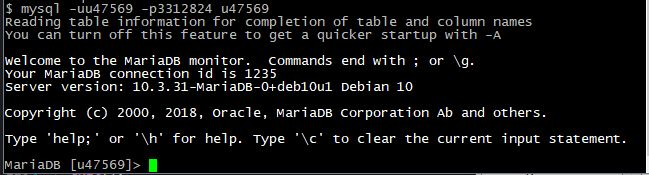
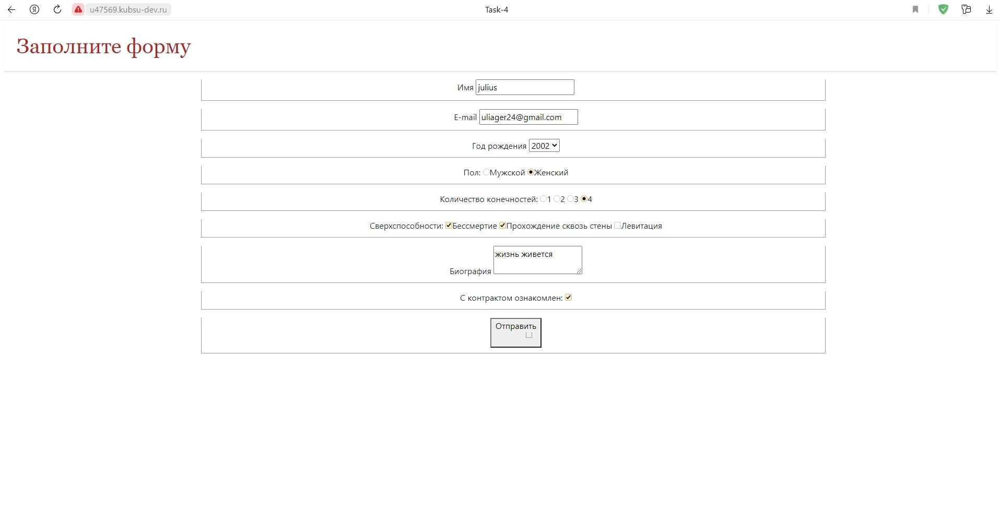
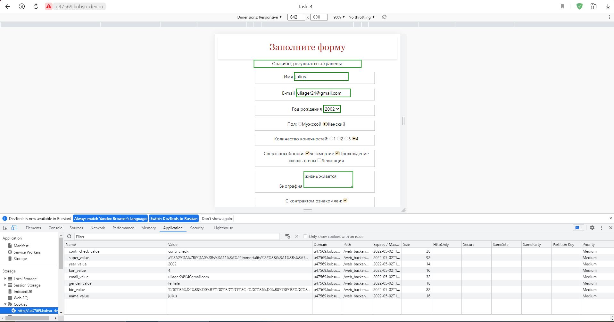
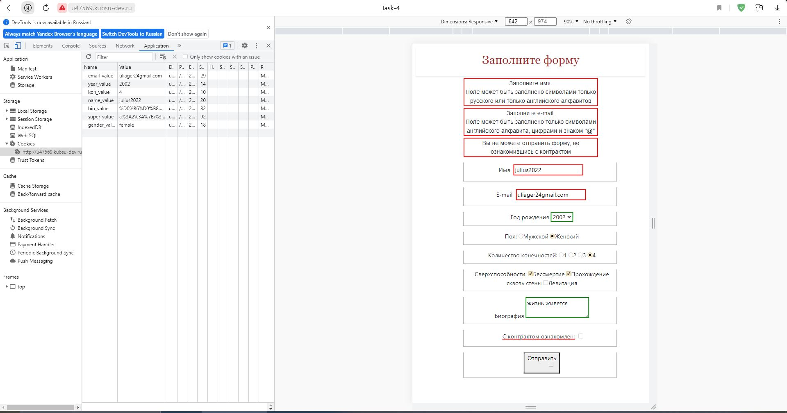
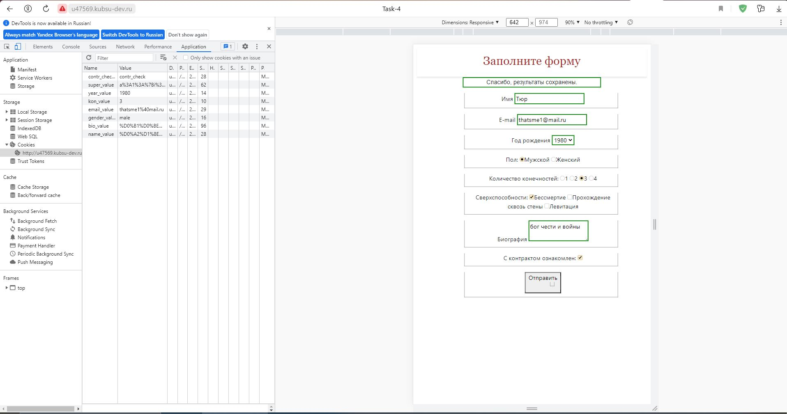
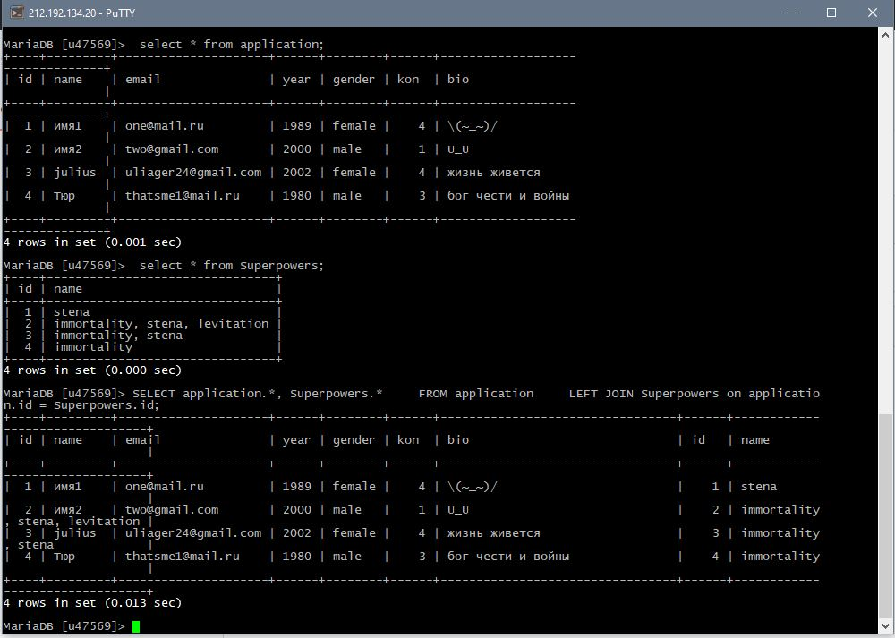

Подключение к базе данных

Пример заполнения формы

После того, как форма будет успешно отправлена на сервер, на экране появится сообщение
Значения сохранятся в cookies(на месяц)

Пример заполнения формы с ошибками
Неправильно заполненные поля также хранятся в cookies(1 день)

Исправленный вариант

Содержимое таблиц после отправки форм. Вывод содержимого сначала по отдельности, затем-одной таблицей с помощью LEFT JOIN
